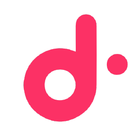

Alexandre Tostivint
est disponible.
Architecte cloud senior, 10 ans de production, ex-DoiT International.
⚠️ Notre outil de chat est bloqué par votre navigateur. Passez par LinkedIn.
À propos
Je suis Alexandre Tostivint, architecte cloud senior. Dix ans de production, une dernière étape chez DoiT International où j'ai accompagné 300+ clients en avant-vente et consulting. J'orchestre des architectures AWS, Azure et GCP, et j'aime autant optimiser une facture FinOps que faire passer une équipe au Well-Architected.
Certifications
Certifications
 AWS Certified Solutions Architect – Professional
Depuis Mar 2022 — valide jusqu'en Fév 2028
Pro
AWS Certified DevOps Engineer – Professional
Depuis May 2022 — valide jusqu'en Mar 2028
Specialty
AWS Certified Security – Specialty
Depuis Aoû 2023 — valide jusqu'en Aoû 2026
Specialty
AWS Certified Advanced Networking – Specialty
Depuis May 2023 — valide jusqu'en Mai 2026
Associate
AWS Certified Developer – Associate
Depuis Jan 2025 — valide jusqu'en Mar 2028
Associate
AWS Certified AI – Practitioner
Depuis Sep 2024 — valide jusqu'en Sep 2027
Pro
AWS Certified Solutions Architect – Professional
Depuis Mar 2022 — valide jusqu'en Fév 2028
Pro
AWS Certified DevOps Engineer – Professional
Depuis May 2022 — valide jusqu'en Mar 2028
Specialty
AWS Certified Security – Specialty
Depuis Aoû 2023 — valide jusqu'en Aoû 2026
Specialty
AWS Certified Advanced Networking – Specialty
Depuis May 2023 — valide jusqu'en Mai 2026
Associate
AWS Certified Developer – Associate
Depuis Jan 2025 — valide jusqu'en Mar 2028
Associate
AWS Certified AI – Practitioner
Depuis Sep 2024 — valide jusqu'en Sep 2027
Pro
 Microsoft Certified: Azure Solutions Architect Expert
Depuis Aoû 2020 — valide jusqu'en Aoû 2026
Pro
Microsoft Certified: Azure DevOps Engineer Expert
Depuis Fév 2020 — valide jusqu'en Fév 2027
Associate
Microsoft Certified: Azure Security Engineer Associate
Depuis Mar 2020 — valide jusqu'en Mar 2027
Microsoft Certified: Azure Solutions Architect Expert
Depuis Aoû 2020 — valide jusqu'en Aoû 2026
Pro
Microsoft Certified: Azure DevOps Engineer Expert
Depuis Fév 2020 — valide jusqu'en Fév 2027
Associate
Microsoft Certified: Azure Security Engineer Associate
Depuis Mar 2020 — valide jusqu'en Mar 2027
Objectifs
Parcours

DoiT International Senior architect, 300+ clients, pre-sales + FinOps Jan 2022 – PresentProjets realises
Refonte FinOps multi-cloud
Accompagnement de 300+ clients chez DoiT International : audit de facturation, optimisation des architectures, -30% de cout moyen sans casser la prod.
Architecture Well-Architected retail
Conception de plateformes cloud pour 40+ clients chez Cloudreach (AWS & GCP), du PoC a la prod sous contrainte retail.
Pipeline data AWS
Mise en place de pipelines data complexes (ingestion, orchestration, qualite) — vers la certification AWS Data Engineer.
Témoignages
Quelques retours. Espace à remplacer par de vrais témoignages.
« Alexandre est le seul architecte que je connaisse qui lit une facture AWS comme un roman et en sort un plan d'économies. »
« En pre-sales, il dessine l'architecture avant de vendre. Ça change tout. »
Votre retour ici
Contact
Deux façons d'ouvrir une session.
💬 Chat
Messagerie instantanée, réponse sous quelques heures. Une question technique, une candidature, un projet ?
⚠️ Le chat est bloqué par votre navigateur. Passez par LinkedIn.